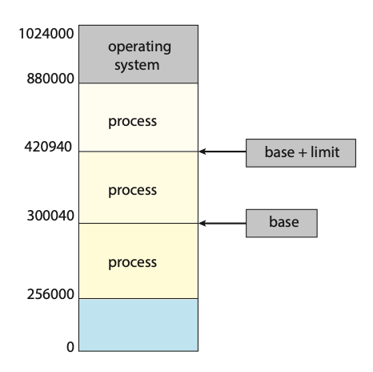
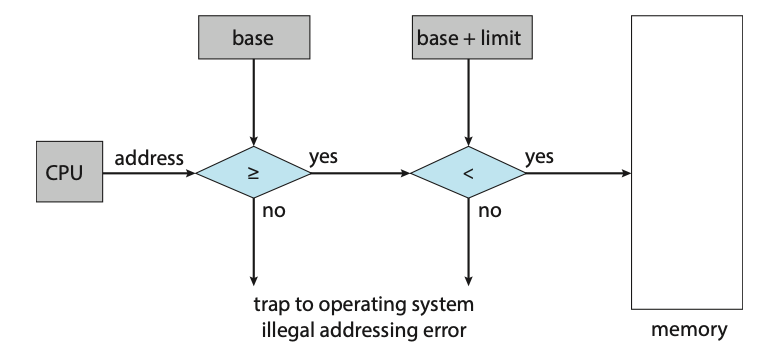
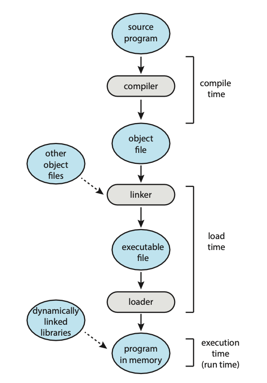
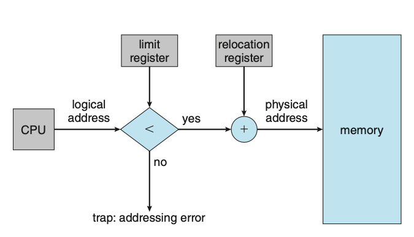
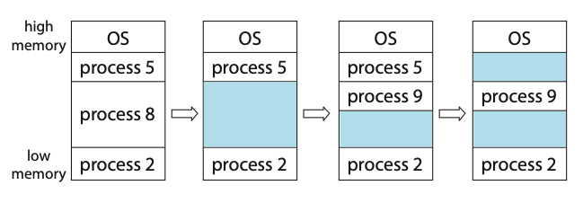
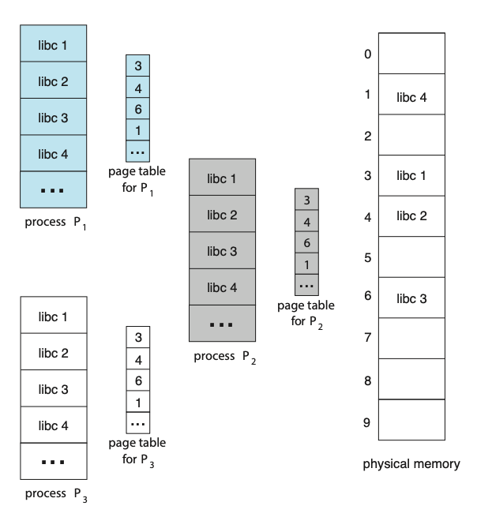
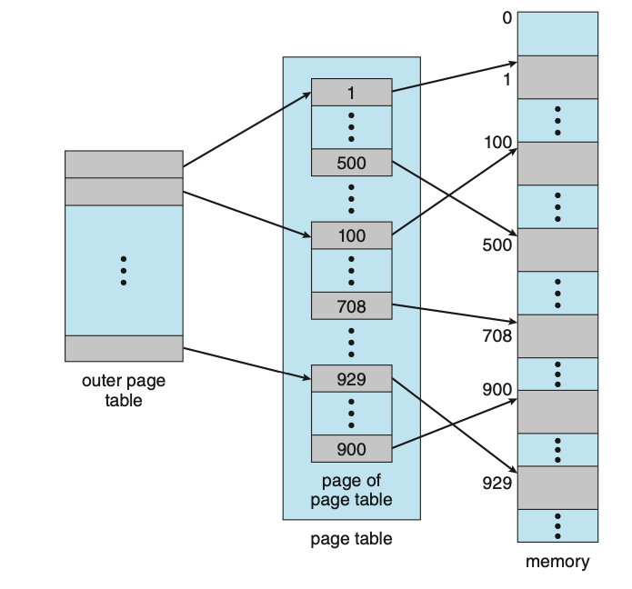

Main Memory
Background
Memory consists of a large array of bytes, each with its own address. The CPU fetches instructions from memory according to the value of the program counter. These instructions may cause additional loading from and storing to specific memory addresses.
A typical instruction-execution cycle:
- First fetches an instruction from memory.
- The instruction is then decoded and may cause operands to be fetched from memory addresses.
- After the instruction has been executed on the operands, results may be stored back into memory.
The memory unit sees only a stream of memory addresses; it does not know how they are generated or what they are for.
Main memory and the registers built into each processing core are the only general-purpose storage that the CPU can access directly. Ther eare machin instructions that take memory addresses as arguments, but none that take disk addresses. Therefore, any instructions in execution, and any data being used by the instructions, must be in one of these direct-access storage devices. If the data are not in memory, they must be moved there before the CPU can operate on them.
Registers that are built into each CPU core are generally accessible within one cycle of the CPU clock. Some CPU cores can decode instructions and perform simple operations on register contents at the rate of one or more operations per clock tick. The same cannot be said of main memory, which is accessed via a transaction on the memory bus. Completing a memory access may take many cycles of the CPU clock. In such cases, the processor normally needs to stall, since it does not have the data required to complete the instruction that it is executing. This situation is intolerable because of the frequency of memory accesses. The remedy is to add fast memory (cache) between the CPU and main memory, typically on the CPU chip for fast access. To manage a cache built into the CPU, the hardware automatically speeds up memory access without any operating-system control.
For proper system operation, we must protect the operating system from access by user processes, as well as protect user processes from one another. This protection must be provided by the hardware, because the operating system doesn't usually intervene between the CPU and its memory accesses (because of the resulting performance penalty).
Base and Limit Registers
We first need to make sure that each process has a separate memory space. Separate per-process memory space protects the processes from each other and is fundamental to having multiple processes loaded in memory for concurrent execution. To separate memory spaces, we need the ability to determine the range of legal addresses that the process may access and to ensure that the process can access only these legal addresses. We can provide this protection by using two registers, usually a base and a limit.

Figure: A base and a limit register define a logical address space.
The base register holds the smallest legal physical memory address; the limit register specifies the size of the range. For example, if the base register holds 300040 and the limit register is 120900, then the program can legally access all addresses from 300040 through 420939 (inclusive).
Protection of memory space is accomplished by having the CPU hardware compare every address generated in user mode with the registers. Any attempt by a program executing in user mode to access operating-system memory or other users' memory results in a trap to the operating system, which treats the attempt as a fatal error. This scheme prevents a user program from (accidentally or deliberately) modifying the code or data structures of either the operating system or other users.
 Figure: Hardware address protection with base and limit registers.
Address Binding
Usually, a program resides on a disk as a binary executable file. To run, the program must be brought into memory and placed within the context of a process, where it becomes eligible for execution on an available CPU. As the process executes, it access instructions and data from memory. Eventually, the process terminates, and its memory is reclaimed for use by other processes.
Most systems allow a user process to reside in any part of the physical memory.
Thus, although the address space of the computer may start at 00000, the first
address of the user process need not be 00000. In most cases, a user program goes
through several steps - some of which may be optional - before being executed.
Addresses may be represented in different ways during these steps. Addresses
in the source program are generally symbolic (such as the variable count). A
compiler typically binds these symbolic address to relocatable addresses (such
as "14 bytes from the beginning of this module"). The linker or loader in turn
binds the relocatable addresses to absolute addresses (such as 74014). Each binding
is a mapping from one address space to another.
 Figure: Multistep processing of a user program.
- Compile time: If you know at compile time where the process will reside in memory, then absolute code can be generated. For example, if you know that a user process will reside starting at location \(R\), then the generated compiler code will start at that location and extend up from there. If, at some later time, the starting location changes, then it will be necessary to recompile this code.
- Load time: If it is not known at compile time where the process wil reside in memory, then the compiler must generate relocatable code. In this case, final binding is delayed until load time. If the starting address changes, we need only reload the user code to incorporate this changed value.
- Execution time: If the process can be moved during its execution from one memory segment to another, then binding must be delayed until run time. Special hardware must be avaiable for this scheme to work.
Logical vs. Physical Address Space
An address generated by the CPU is commonly referred to as a logical address, whereas an address seen by the memory unit - that is, the one loaded into the memory-address register of the memory - is commonly referred to as a physical address.
Binding addresses at either compile or load time generates identical logical and physical addresses. However, the execution-time address-binding scheme results in differing logical and physical addresses. In this case, we usually refer to the logical address as a virtual address. The set of logical address generated by a program is a logical address space. The set of physical addresses corresponding to these logical addresses is a physical address space. Thus, in the execution-time address-binding scheme, the logical and physical address spaces differ.
Memory Management Unit (MMU)
THe run-time mapping from virtual to physical addresses is done by a hardware device called the memory-management unit (MMU). We can choose from many different methods to accomplish such mapping.
Consider a simple scheme where the value in the relocation register (the base register) is added to every address generated by a user process at the time it is sent to memory. For example, if the base is at 14000, then an attempt by the user to address location 0 is dynamically relocated to location 14000; an access to location 346 is mapped to location 14346.
The user program never accesses the real physical addresses. The program can create a pointer to location 346, store it in memory, manipulate it, and compare it with other addresses all as the number 346. Only when it is used as a memory address (in an indirect load or store, perhaps) is it relocated relative to the base register. The user program deals with logical addresses. The final location of a referenced memory address is not determined until the reference is made.
Dynamic Linking
So far, it has been necessary for the entire program and all data of a process to be in physical memory for the process to execute. The size of a process has thus been limited to the size of physical memory. To obtain better memory-space utilization, we can use dynamic loading. With dynamic loading, a routine is not loaded until it is called. All routines are kept on disk in a relocatable load format. The main program is loaded into memory and is executed. When a routine needs to call another routine, the calling routine first checks to see whether the other routine has been loaded. If it has not, the relocatable linking loader is called to load the desired routine into memory and to update the programs' address tables to reflect this change. Then control is passed to the newly loaded routine. Dynamic loading does not require any special support from the operating system. It is the responisiblity of the user to design their programs to take advantage of such a method. Operating systems may however help the programmer by providing library routines to implement dynamic loading.
Dynamically linked libraries (DLLs) are system libraries that are linked to user programs when the programs are run. Some operating systems support only static linking, in which system libraries are treated like any other object module and are combined by the loader into the binary program image. Dynamic linking, in contrast, is similar to dynamic loading. Here, though, linking, rather than loading, is postponed until execution time. A second advantage of DLLs is that these libraries can be shared among multiple processes, so that only one instance of the DLL is in main memory. For this reason, DLLs are also known as shared libraries.
Unlike dynamic loading, dynamic linking and shared libraries generally require help from the operating system. If the processes in memory are protected from one another, then the operating system is the only entity that can check to see whether the needed routine is in another process's memory space or that can allow multiple processes to access the same memory addresses.
Contiguous Allocation
The main memory must accommodate both the operating system and the various user procces. We therefore need to allocate main memory in the most efficient way possible. The main memory is usually divided into two partitions: one for the operating system and one for the user processes. We can place the operating system in either low memory addresses or high memory addresses. This decision depends on many factors, such as the location of the interrupt vector. However, many operating systems place the operating system in high memory.
We usually want several user processes to reside in memory at the same time. We therefore need to consider how to allocate available memory to the processes that are waiting to be brought into memory. In contiguous memory allocation, each process is contained in a single section of memory that is contiguous to the section containing the next process.
We can prevent a process from accessing memory that it does not own by combining two ideas previously discussed. If we have a system with a relocation register, together with a limit register, we accomplish our goal. The relocation register contains the value of the smallest physical address; the limit register contains the range of logical addresses. The MMU maps the logical address dynamically by adding the value in the relocation register. This mapped address is sent to memory.

Figure: Hardware support for relocation and limit registers.
When the CPU scheduler selects a process for execution, the dispatcher loads the relocation and limit registers with the correct values as part of the context switch. Because every address generated by a CPU is checked against these registers, we can protect both the operating system and the other users’ programs and data from being modified by this running process.
One of the simplest methods of allocating memory is to assign processes to variably sized partitions in memory, where each partition may contain exactly one process. In this variable-partition shecme, the operating system keeps a table indicating which parts of memory are available and which are occupied. Initially, all memory is available for user processes and is considered one large block of available memory, a hole. Memory contains a set of holes of various sizes.

Figure: Variable partition.
Initially, the memory is fully utilised, containing processes 5, 8, and 2. After process 8 leaves, there is one contiguous hole. Later on, process 9 arrives and is allocated memory. Then process 5 departs, resulting in two non-contiguous holes.
As processes enter the system, the operating system takes into account the memory requirements of each process and the amount of availabe memory space in determining which processes are allocated memory. When a process is allocated space, it is loaded into memory, where it can then compete for CPU time. When a process terminates, it releases its memory, which the operating system may then provide to another process.
In general, the memory blocks available comprise a set of holes of various sizes scattered throughout memory. When a process arrives and needs memory, the system searches the set for a hole that is large enough for this process. If the hole is too large, it is split into two parts. One part is allocated for the arriving process; the other is returned to the set of holes. When a process terminates, it releases its block of memory, which is then placed back in the set of holes. If the new hole is adjacent to other holes, these adjacent holes are merged to form one larger hole. This procedure is a particular instance of the general dynamic storage-allocation problem, which concerns how to satisfy a request of size \(n\) from a list of free holes. There are many solutions to this problem.
- First fit: Allocate the first hole that is big enough. Searching can start either at the beginning of the set of holes or at the location where the previous first-fit search ended. We can stop searching as soon as we find a free hole that is large enough.
- Best fit: Allocate the smallest hole that is big enough. We must search the entire list, unless the list is ordered by size. This strategy produces the smallest leftover hole.
- Worst fit: Allocate the largest hole. Again, we must search the entire list, unless it is sorted by size. This strategy produces the largest leftover hole, which may be more useful than the smaller leftover hole from a best-fit approach.
Simulations have shown that both first fit and best fit are better than worst fit in terms of decreasing time and storage utilization. Neither first fit nor best fit is clearly better than the other in terms of storage utilization, but first fit is generally faster.
Fragmentation
Both the first-fit and best-fit strategies for memory allocation suffer from external fragmentation. As processes are loaded and removed from memory, the free memory space is broken into little pieces. External fragmentation exists when there is enough total memory space to satisfy a request but the available spaces are not contiguous.
Depending on the total amount of memory storage and the average process size, external fragmentation may be a minor or a major problem. Statistical analysis of first fit, for instance, reveals that, even with some optimisation, given \(N\) allocated blocks, another 0.5 \(N\) blocks will be lost to fragmentation. That is, one third of memory may be unusable. This property is known as the 50-percent rule.
Memory fragmentation can be internal as well as external. Consider a multiple-partition allocation scheme with a hole of 18,464 bytes. Suppose that the next process requests 18,462 bytes. If we allocate exactly the requested block, we are left with a hole of 2 bytes. The overhead to keep track of this hole will be substantially larger than the hole itself. The general approach to avoiding this problem is to break the physical memory into fixed-sized blocks and allocate memory in units based on block size. With this approach, the memory allocated to a process may be slightly larger than the requested memory. The difference between these two numbers is internal fragmentation — unused memory that is internal to a partition.
One solution to the problem of external fragmentation is compaction. The goal is to shuffle the memory contents so as to place all free memory together in one large block. Compaction is not always possible, however. If relocation is static and is done at assembly or load time, compaction cannot be done. It is possible only if relocation is dynamic and is done at execution time.
Paging
Paging is a memory-management scheme that permits a process's physical address space to be non-contiguous. Paging avoids external fragmentation and the associated need for compaction.
The basic method for implementing paging involves breaking physical memory into fixed-sized blocks called frames and breaking logical memory into blocks of the same size called pages. When a process is to be executed, its pages are loaded into any available memory frames from their source. The backing store is divided into fized-sized blocks that are the same size as the memory frames or clusters of multiple frames. For example, the logical address space is now totally separate from the physical address space, so a process can have a logical 64-bit address space even though the system has less than \(2^{64}\) bytes of physical memory.
Every address generated by the CPU is divided into two parts: a page numbeer (p) and a page offset (d). The page number is used as an index into a pre-process page table. The page table contains the base address of each frame in physical memory, and the offset is the location in the frame being referenced. Thus the base address of the frame is combined with the page offset to define the physical memory address.
The use of registers for the page table is satisfactory if the page table is reasonably small (for example, 256 entries). Most contemporary CPUs, however, support much larger page tables (for example, 220 entries). For these machines, the use of fast registers to implement the page table is not feasible. Rather, the page table is kept in main memory, and a page-table base register (PTBR) points to the page table. Changing page tables requires changing only this one register, substantially reducing context-switch time.
Although storing the page table in main memory can yield faster context switches, it may also result in slower memory access times. Suppose we want to access location \(i\). We must first index into the page table, using the value in the PTBR offset by the page number for \(i\). This task requires one memory access. It provides us with the frame number, which is combined with the page offset to produce the actual address. We can then access the desired place in memory. With this scheme, two memory accesses are needed to access data (one for the page-table entry and one for the actual data). Thus, memory access is slowed by a factor of 2, a delay that is considered intolerable under most circumstances.
The standard solution to this problem is to use a special, small, fast-lookup hardware cache called a translation look-aside buffer (TLB). To be able to execute the search within a pipeline step, however, the TLB must be kept small. It is typically between 32 and 1,024 entries in size. Some CPUs implement separate instruction and data address TLBs. That can double the number of TLB entries available, because those lookups occur in different pipeline steps.
If the page number is not in the TLB (known as a TLB miss), address translation proceeds, where a memory reference to the page table must be made. When the frame number is obtained, we can use it to access memory. In addition, we add the page number and frame number to the TLB, so that they will be found quickly on the next reference.
Some TLBs store address-space identifier (ASIDs) in each TLB entry. An ASID uniquely identifies each process and is used to provide address-space protection for that process. When the TLB attempts to resolve virtual page numbers, it ensures that the ASID for the currently running process matches the ASID associated with the virtual page. If the ASIDs do not match, the attempt is treated as a TLB miss. In addition to providing address-space protection, an ASID allows the TLB to contain entries for several different processes simultaneously. If the TLB does not support separate ASIDs, then every time a new page table is selected (for instance, with each context switch), the TLB must be flushed (or erased) to ensure that the next executing process does not use the wrong translation information. Otherwise, the TLB could include old entries that contain valid virtual addresses but have incorrect or invalid physical addresses left over from the previous process.
The percentage of times that the page number of interest is found in the TLB is called the hit ratio. An 80-percent hit ratio, for example, means that we find the desired page number in the TLB 80 percent of the time. If it takes 10 nanoseconds to access memory, then a mapped-memory access takes 10 nanoseconds when the page number is in the TLB. If we fail to find the page number in the TLB then we must first access memory for the page table and frame number (10 nanoseconds) and then access the desired byte in memory (10 nanoseconds), for a total of 20 nanoseconds. (We are assuming that a pagetable lookup takes only one memory access, but it can take more, as we shall see.)
To find the effective memory-access time, we weight the case by its probability:
\[ \begin{align*} \text{effective access time} &= 0.80 \times 10 + 0.20 \times 20 \\ &= 12 \text{nanoseconds} \end{align*} \]
In this example, we suffer a 20-percent slowdown in average memory-access time (from 10 to 12 nanoseconds).
Memory Protection
Memory protection in a paged environment is accomplished by protection bits associated with each frame. Normally, these bits are kept in the page table. One bit can define a page to be read - write or read-only. Every reference to memory goes through the page table to find the correct frame number. At the same time that physical address is being computed, the protection bits can be checked to verify that no writes are being made to a read-only page. At attempt to write to a read-only page causes a hardware trap to the operating system (or memory-protection violation).
One additional bit is generally attached to each entry in the page table: a valid-invalid bit. When this bit is set to valid, the associated page is in the process's logical address space and is thus a legal (or valid) page. When the bit is set to invalid, the page is not in the process's logical address space. Illegal addresses are trapped by use of the valid-invalid bit. The operating system sets this bit for each page to allow or disallow access to the page.
Rarely does a process use all its address range. In fact, many processes use only a small fraction of the address space available to them. It would be wasteful in these cases to create a page table with entries for every page in the address range. Most of this table would be unused but would take up valuable memory space. Some systems provide hardware, in the form of a page-table length register (PTLR), to indicate the size of the page table. This value is checked against every logical address to verify that the address is in the valid range for the process. Failure of this test causes an error trap to the operating system.
Shared Pages
An advantage of paging is the possibility of sharing common code, a consideration that is particularly important in an environment with multiple processes. On a typical Linux system, most user processes require the standard C library libc. One option is to have each process load its own copy of libc into its address space. If a system has 40 user processes, and the libc library is 2 MB, this would require 80 MB of memory.
If the code is reentrant code, however, it can be shared.

Figure: Sharing of standard C library in a paging environment.
Here, we see three processes sharing the pages for the standard C library libc. Reentrant code is non-self-modifying code: it never changes during execution. Thus, two or more processes can execute the same code at the same time. Each process has its own copy of registers and data storage to hold the data for the process’s execution. The data for two different processes will, of course, be different. Only one copy of the standard C library need be kept in physical memory, and the page table for each user process maps onto the same physical copy of libc. Thus, to support 40 processes, we need only one copy of the library, and the total space now required is 2 MB instead of 80 MB — a significant saving. In addition to run-time libraries such as libc, other heavily used programs can also be shared — compilers, window systems, database systems, and so on.
Hierarchical Page Tables
Most modern computer systems support a large logical address space (232 to 264). In such an environment, the page table itself becomes excessively large. Clearly, we would not want to allocate the page table contiguously in main memory. One simple solution to this problem is to divide the page table into smaller pieces.
One way of accomplishing this division is to use a two-level paging algorithm, in which the page table itself is also pages.

Figure: A two-level page-table scheme.
Hashed Page Tables
One approach for handling address spaces larger than 32 bits is to use a hashed page table, with the hash value being the virtual page number. Each entry in the hash table contains a linked list of elements that hash to the same location (to handle collisions). Each element consists of three fields: (1) the virtual page number, (2) the value of the mapped page frame, and (3) a pointer to the next element in the linked list.
A variation of this scheme that is useful for 64-bit address spaces has been proposed. This variation uses clustered page tables, which are similar to hashed page tables except that each entry in the hash table refers to several pages (such as 16) rather than a single page. Therefore, a single page-table entry can store the mappings for multiple physical-page frames. Clustered page tables are particularly useful for sparse address spaces, where memory references are noncontiguous and scattered throughout the address space.
Inverted Page Tables
An inverted page table has one entry for each real page (or frame) of memory. Each entry consists of the virtual address of the page stored in that real memory location, with information about the process that owns the page. Thus, only one page table is in the system, and it has only one entry for each page of physical memory.
Swapping
Process instructions and the data they operate on must be in memory to be executed. However, a process, or a portion of a process, can be swapped temporarily out of memory to a backing store and then brought back into memory for continued execution. Swapping makes it possible for the total physical address space of all processes to exceed the real physical memory of the system, thus increasing the degree of multiprogramming in a system.